11月18日，JumpServer开源堡垒机正式发布v2.5.0版本。该版本的新增功能包括：支持Web UI数据库审计（X-Pack增强包内）、支持敏感数据国密算法加密、新增克隆创建、新增高危命令告警，支持设置告警接收邮件，资产导入支持通过节点名称的导入方式。
新增功能
1. 支持Web UI数据库审计（X-Pack增强包内）
在JumpServer v2.5.0版本中，新增Web UI数据库审计功能。该功能支持对MySQL、MariaDB、Oracle、PostgreSQL数据库连接进行可视化的界面操作。用户只需创建相应的数据库应用，创建登录数据库的系统用户，然后对其进行数据库授权，便可以通过Luna界面点击数据库，进行可视化的数据库界面操作。
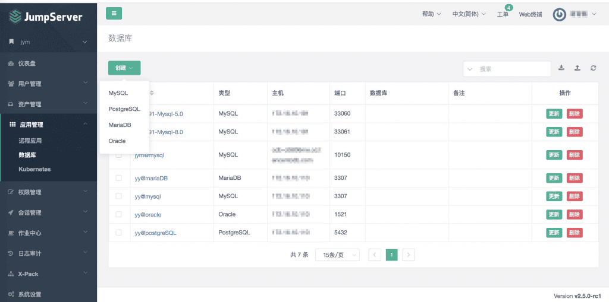
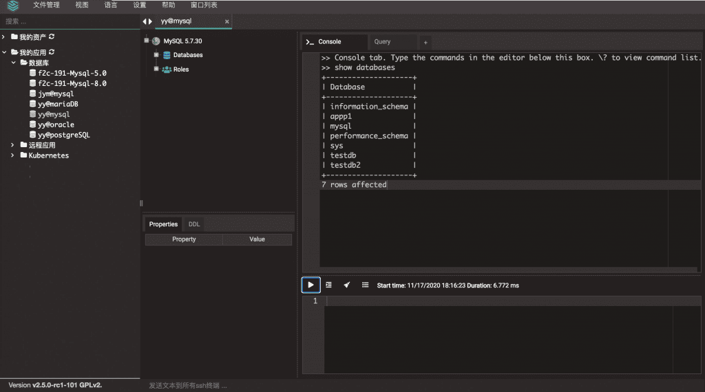
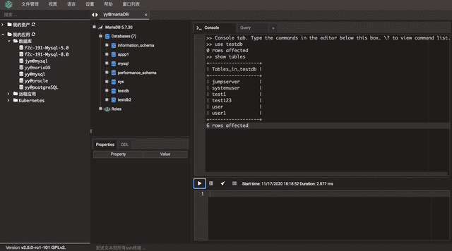
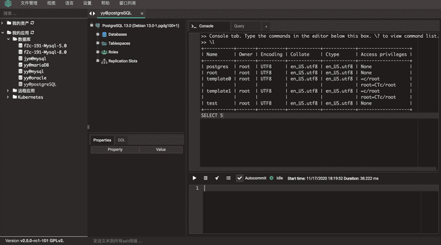
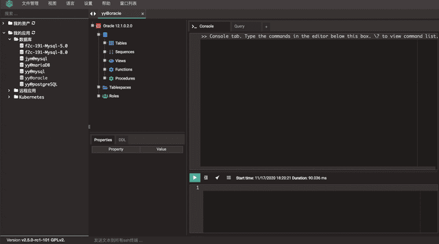
2. 支持克隆创建
在JumpServer v2.5.0版本中，新增克隆创建，以及资源创建后可以不跳转继续创建。即在创建资源表单填写信息完毕后，点击“保存并继续添加”按钮，即可实现克隆创建。
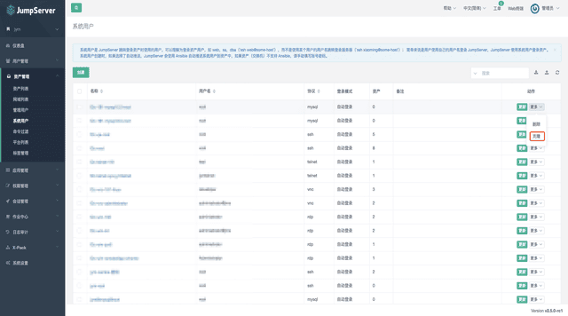
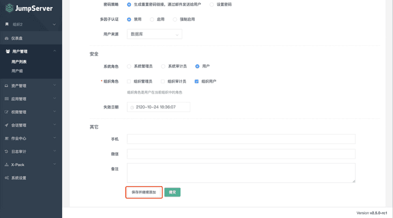
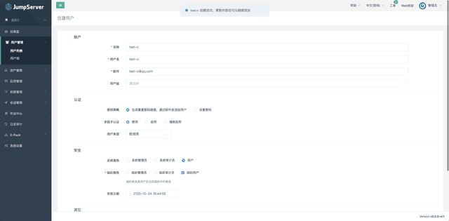
3. 创建和更新资源成功时，提示消息可跳转至详情页
在JumpServer v2.5.0版本中，当创建和更新资源成功时，提示消息可跳转到详情页。
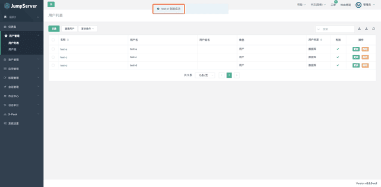
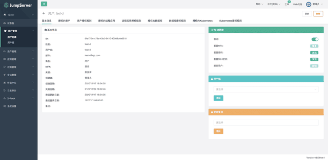
4. 资产导入支持节点名称的导入方式
在JumpServer v2.5.0版本中，资产导入支持直接填写节点全称，如果节点名称不存在，则自动进行创建。
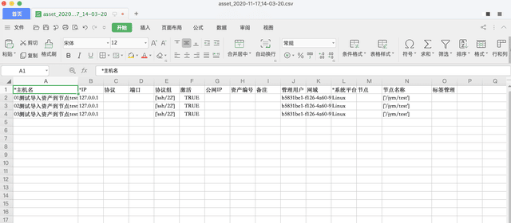
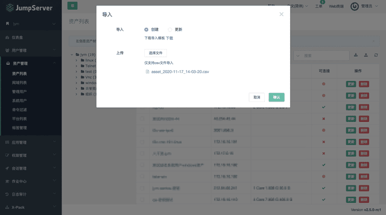
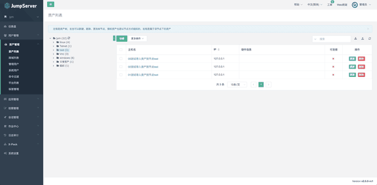
5. 新增高危命令告警，可设置告警接收邮件
在JumpServer v2.5.0版本中，新增高危命令告警，可设置告警接收邮件。用户在操作资产时，如果输入高危命令，所设置的邮箱将接收到告警邮件。
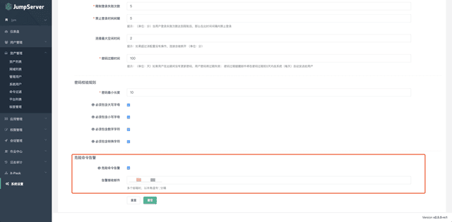
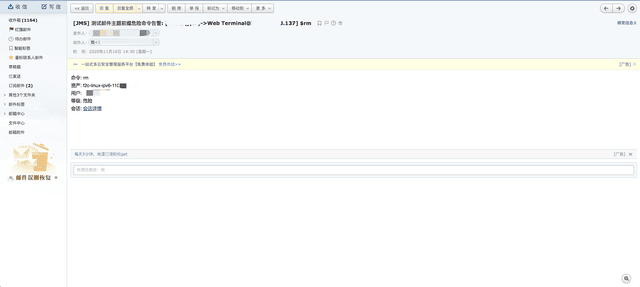
6. 支持国密加密
JumpServer v2.5支持国密算法，对称加密采用的是SM4算法，SM4算法对标的是AES算法，详细信息可以查看文档。JumpServer配置使用国密算法后，对之前的加密做了兼容。
系统用户使用国密加密前后对比：
# AES 加密
mysql> select password from assets_systemuser where id = '8d7e9a51919f4738ac4b1197c9b00681';
+----------------------------------------------------------------------------------+
| password |
+----------------------------------------------------------------------------------+
| zi1Sf33LlFssLIaCQBbOhA==2hmXJwpHc1B0lpI6gqsd+g==Hu00ArXd893A9K6RpFtOyg==RJ/ivmfR |
+----------------------------------------------------------------------------------+
1 row in set (0.00 sec)
# 国密 SM4 后
mysql> select password from assets_systemuser where id = '8d7e9a51919f4738ac4b1197c9b00681';
+--------------------------+
| password |
+--------------------------+
| 0T-hgpYELmkDAxwI8Wa1sQ== |
+--------------------------+
1 row in set (0.01 sec)JumpServer使用国密算法，修改配置参数即可，默认是AES。
# config.txt 环境变量的配置文件
SECURITY_DATA_CRYPTO_ALGO=gm
# config.yml yml格式配置文件
SECURITY_DATA_CRYPTO_ALGO: gm功能优化
■ MySQL连接支持使用网域网关；
■ 密码过期前，页面中增加提示信息；
■ LDAP用户搜索，忽略大小写并支持模糊搜索；
■ 支持批量删除任务信息；
■ 优化改密计划，生成默认密码规则的长度为30位，包含大小写、数字、特殊字符（X-Pack增强包内）；
■ 优化云管中心同步逻辑（X-Pack增强包内）；
■ 优化Elastic Search的命令记录，增加时间字段（KoKo）；
■ 优化KoKo注册机制（KoKo）；
■ 优化共享监控，可返回最新数据（KoKo）。
Bug修复
■ 修复用户登录失败次数出现0次的问题；
■ 修复设置网关的密码不能包含特殊字符；
■ 修复资产授权规则导入失败的问题；
■ 修复用户的资产不区分组织的问题；
■ 修复工单申请资产授权中通过人显示不对的问题；
■ 修复华为云没有获取全部Region下的VPC，导致同步资产设置网域为Default的问题（X-Pack增强包内）。
重构
■ 重构Application模块；
■ 重构ApplicationPermission模块。